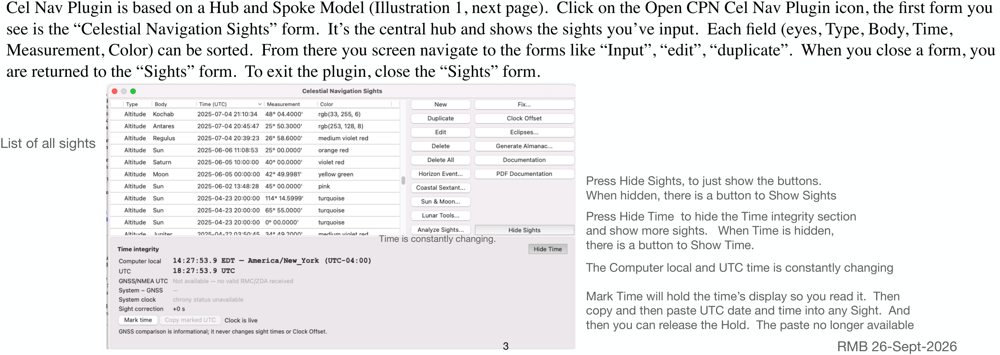

Full-size illustration. Scroll to inspect the details.

Cel Nav Plugin is based on a Hub and Spoke Model (Illustration 1, next page). Click on the Open CPN Cel Nav Plugin icon, the first form you see is the “Celestial Navigation Sights” form. It’s the central hub and shows the sights you’ve input. Each field (eyes, Type, Body, Time, Measurement, Color) can be sorted. From there you screen navigate to the forms like “Input”, “edit”, “duplicate”. When you close a form, you are returned to the “Sights” form. To exit the plugin, close the “Sights” form.
List of all sights
Press Hide Sights, to just show the buttons. When hidden, there is a button to Show Sights
Press Hide Time to hide the Time integrity section and show more sights. When Time is hidden, there is a button to Show Time. Time is constantly changing.
The Computer local and UTC time is constantly changing
Mark Time will hold the time’s display so you read it. Then copy and then paste UTC date and time into any Sight. And then you can release the Hold. The paste no longer available